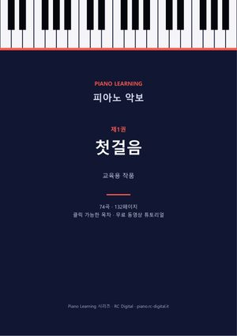
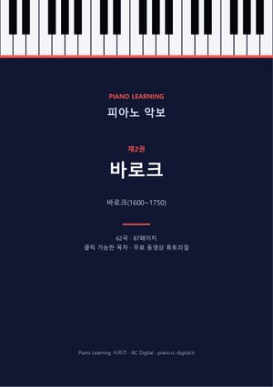
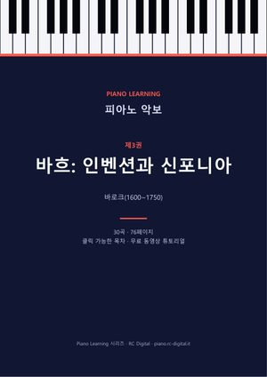
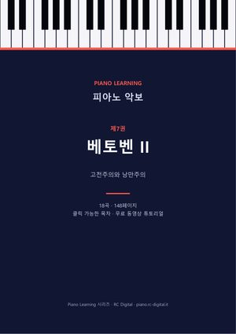
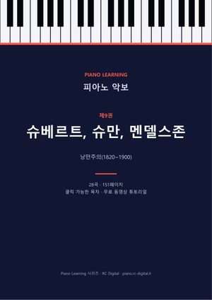
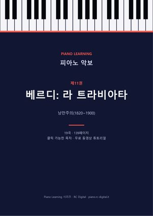
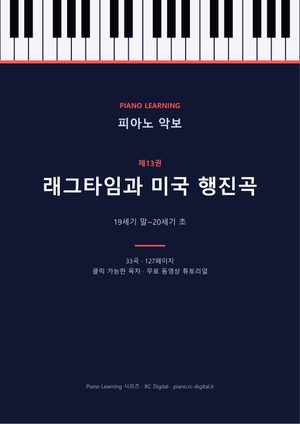
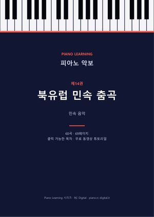
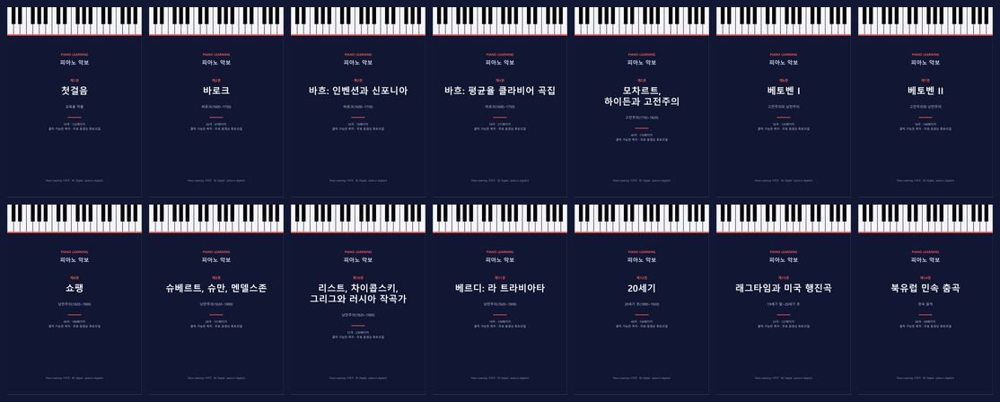

- 564곡
- 1933악보 페이지
- 14권
- 10개 언어

모든 권에 들어 있는 것
클릭 가능한 목차
목차에서 곡 제목을 누르면 바로 그 페이지로 이동합니다. 책갈피도 있습니다.
작곡가 소개
지금 연주하는 음악을 누가 썼는지 몇 줄로 알려 드립니다.
동영상 튜토리얼 링크
악보에서 떨어지는 음표 영상으로 바로 이동합니다. 튜토리얼이 있는 모든 곡에 링크가 있습니다.
10개 언어 포함
한 번 구매하면 원하는 언어의 판을 내려받을 수 있습니다.
미리 보기
전집에 실린 네 곡의 첫 페이지입니다. 페이지를 누르면 그 곡의 페이지가 열립니다.
낱권 €3.99


바로크(1600~1750)
제4권바흐: 평균율 클라비어 곡집
《평균율 클라비어 곡집》의 전주곡과 푸가, 영국 모음곡과 프랑스 모음곡, 모음곡 BWV 1006a, 《푸가의 기법》.
59곡 · 211페이지
€3.99구매하기









가장 알뜰한 선택
다섯 권 이상 필요하신가요?
낱권 다섯 권은 €19.95입니다. 14권이 모두 든 전집은 €19.99입니다.
€55.86€19.99−64%
14권 전체: 564곡, 악보 1933페이지.
구매 방법
- 고르기낱권 한 권 또는 전집.
- 안전하게 결제결제는 Payhip에서 몇 단계로 끝납니다.
- 바로 다운로드다운로드 페이지가 열리고 링크는 이메일로도 받습니다.
자주 묻는 질문
악보는 어떤 형식인가요?
PDF입니다. 컴퓨터, 태블릿, 휴대폰에서 열 수 있고 인쇄도 할 수 있습니다. 각 권은 클릭 가능한 목차와 책갈피가 있는 하나의 파일입니다.
어떤 언어로 되어 있나요?
모든 구매에 10개 언어의 판이 포함됩니다: 이탈리아어, 영어, 독일어, 스페인어, 프랑스어, 포르투갈어, 러시아어, 중국어, 일본어, 한국어. 원하는 판을 내려받으시면 됩니다.
파일은 어떻게 받나요?
결제 직후 다운로드 페이지가 열리고 링크가 담긴 이메일도 받습니다. 낱권은 PDF 하나이고, 전집은 언어별 ZIP 파일 하나에 PDF 14개가 들어 있습니다(약 50MB).
같은 악보를 무료로도 구할 수 있나요?
네. 자유 판본(퍼블릭 도메인 또는 Creative Commons)이라 이 사이트의 곡별 페이지에 무료 링크가 있습니다. 전집은 모든 곡을 작곡가와 시대별로 정리하고 목차, 작곡가 소개, 튜토리얼 링크, 각 판본의 출처를 담았습니다.
크리스마스 권은 전집에 포함되나요?
아니요. 제15권 「크리스마스 캐럴과 쉬운 멜로디」은 €3.99에 따로 판매합니다. 전집에는 제1권부터 제14권까지 들어 있습니다.
564곡, 14권, 한 번의 구매
14권을 낱권으로 살 때보다 64% 저렴합니다 (€55.86).
€55.86€19.99−64%
- Payhip 안전 결제
- 바로 다운로드
- 한 번 결제, 구독 없음
Payhip 안전 결제 후 이메일로 바로 다운로드합니다. 악보는 자유 판본(퍼블릭 도메인 또는 Creative Commons)으로, 이 사이트의 곡별 페이지에서 한 곡씩 무료로도 받을 수 있습니다. 여기서는 모두 하나의 파일로 정리하고 각 판본의 출처를 모두 밝혀 두었습니다.